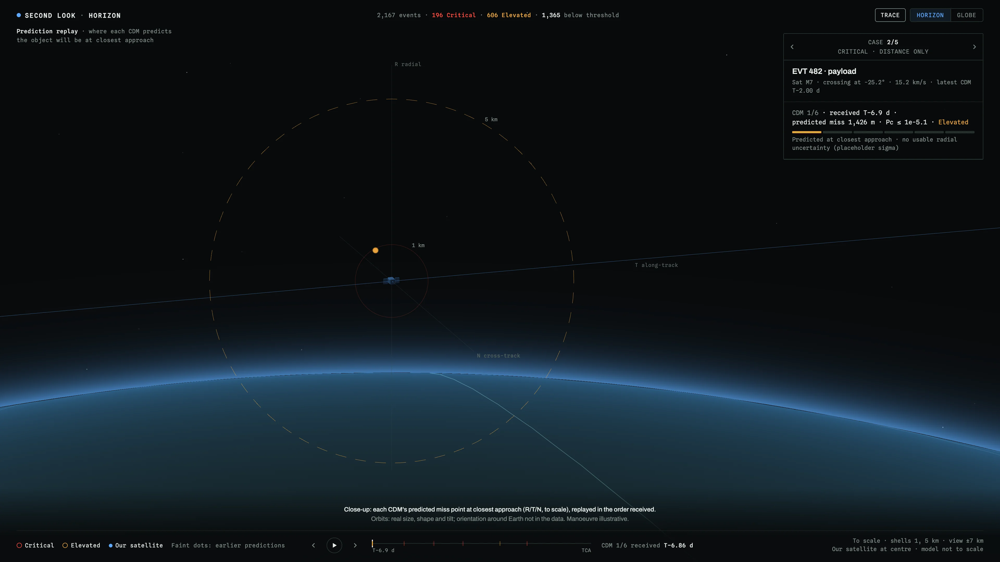
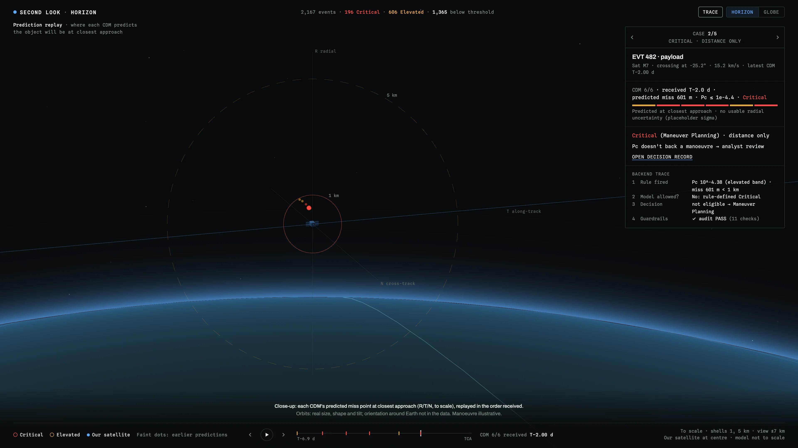
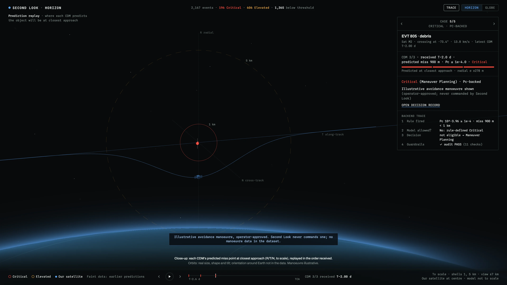
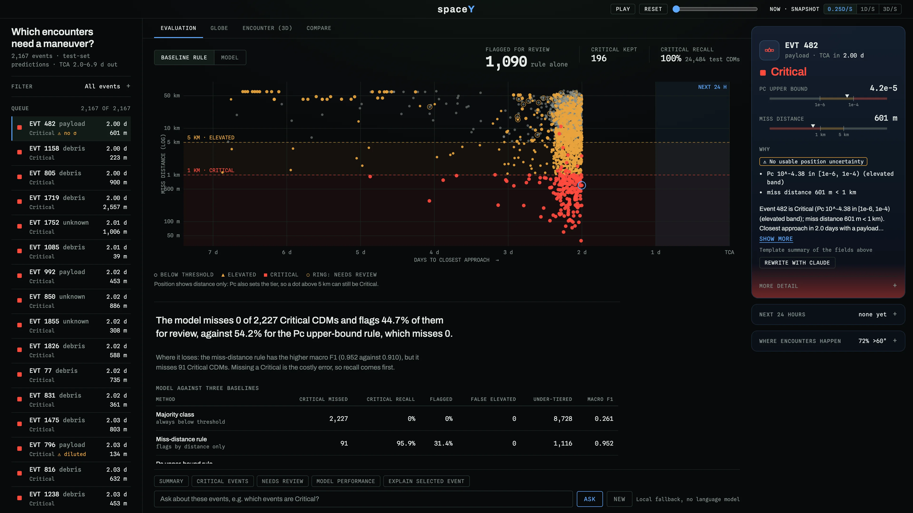
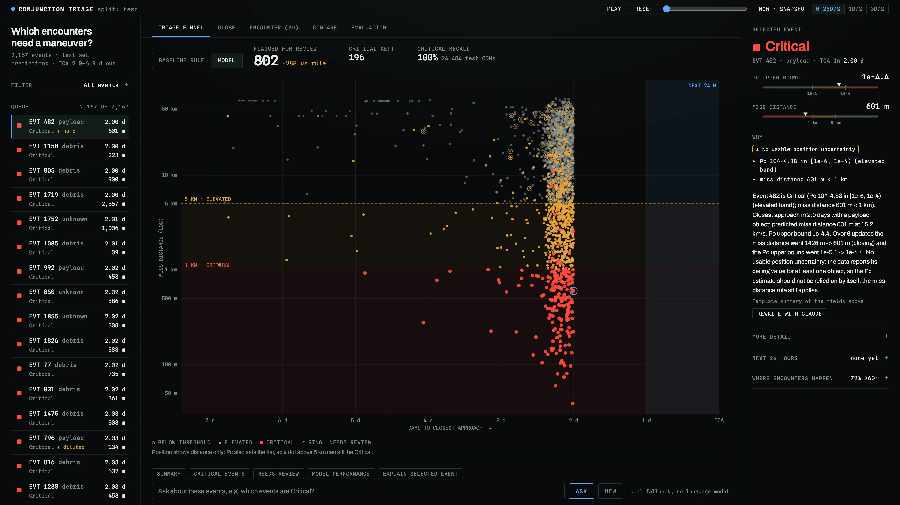
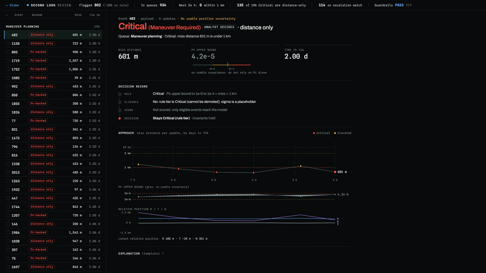
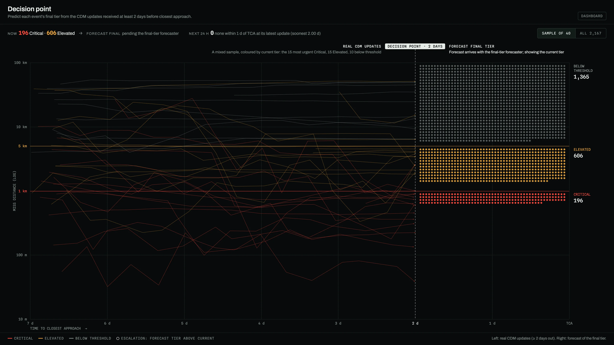
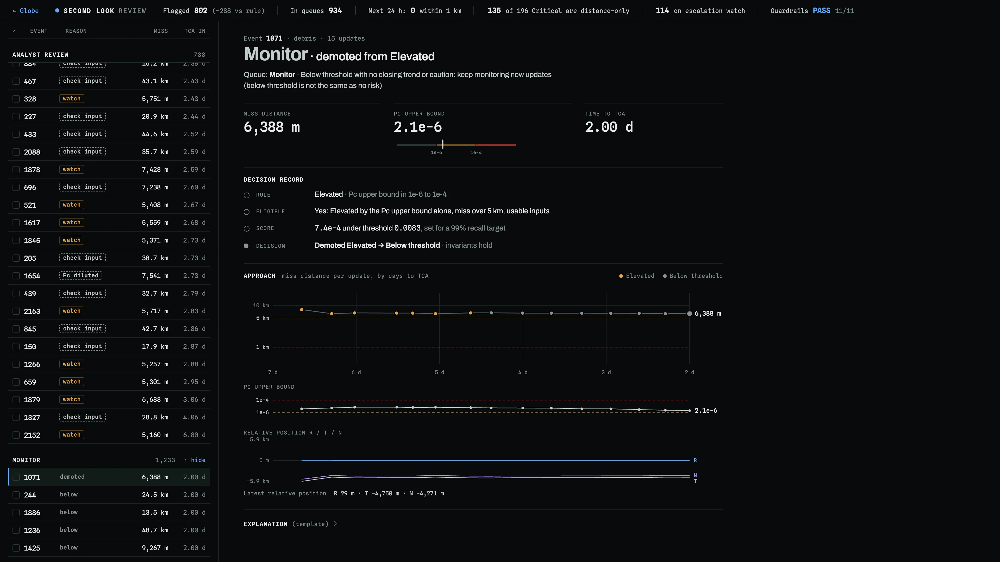
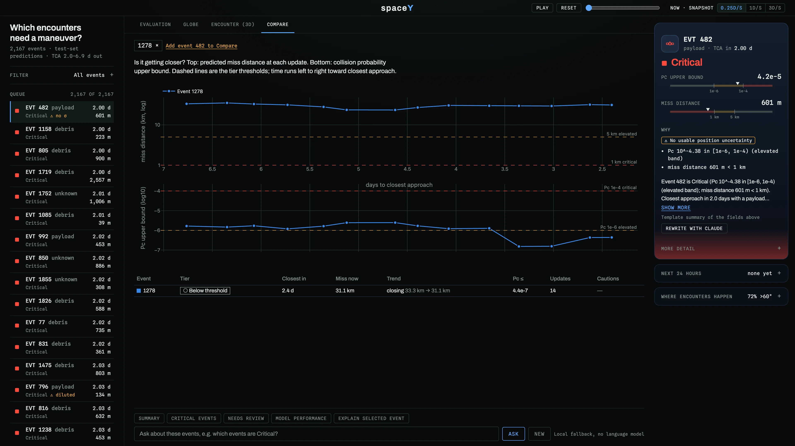
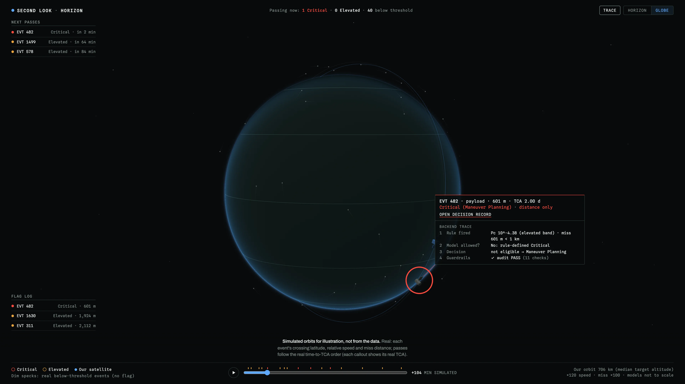

| Ours | Keep tier | |
|---|---|---|
| Critical recall | 0.950 | 0.865 |
| Critical precision | 0.565 | 0.857 |
| Critical F2 | 0.835 | 0.863 |
| Escalations caught | 115/270 | 0/270 |
| False escalations | 1,139 | 0 |
| Accuracy | 0.862 lower | 0.938 |


| Test set | Critical recall | False alarms | Under-tiered |
|---|---|---|---|
| Pc upper-bound rulestatus quo | 100% | 4,534 | 0 |
| Miss-distance rulemisses 91 Critical CDMs | 95.9% | 0 | 1,116 |
| Miss rule + Pc for Criticalstrongest simple baseline | 100% | 8 | 1,012 |
| Second Lookrules + model | 100% | 2,214 | 1 |

| True final ↓ | Below | Elevated | Critical |
|---|---|---|---|
| Below thr. | 7,999 | 882 | 65 |
| Elevated | 115 | 1,500 | 547 |
| Critical | 10 | 32 | 792 |
